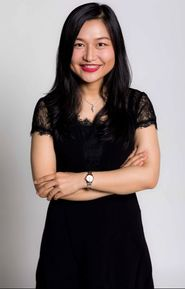

Yue Qian
Professor of Sociology
The Chinese University of Hong Kong
I am a Professor of Sociology at The Chinese University of Hong Kong. I received my PhD in Sociology from The Ohio State University and began my academic career at the University of British Columbia in 2016, becoming a Full Professor in 2025. My research examines how gender, family, and work shape inequality and well-being, particularly in North America and East Asia.
I have published over 60 articles, including in Nature Human Behaviour, Proceedings of the National Academy of Sciences (PNAS), American Sociological Review, Social Forces, and Journal of Marriage and Family, and delivered over 50 invited talks across North America, Asia, and Europe.
My research has been featured by CBC, The Globe and Mail, The New York Times, and The Washington Post, and cited in policy publications from the United Nations, World Bank, and World Health Organization.
Outside academia, I enjoy yoga, snowboarding, and windsurfing.

Selected recognition
Research & public engagement
University of British Columbia
- Killam Research Prize
- Public Engagement Award
- Dean of Arts Faculty Research Award
Canadian Sociological Association
Early Investigator Award
Research impact
Listed among the world’s top 2% most-cited scientists, 2022–2025. View the 2025 database ↗